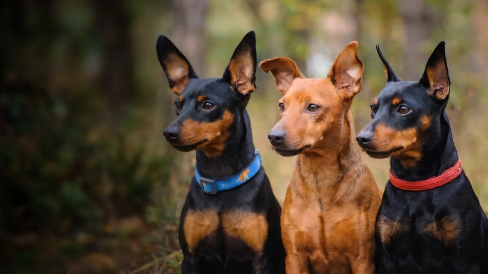

Розплідник FCI · UKU
 Анастасія
Анастасія
заводчиця Happy Stacyland
Цвергпінчери, які стають частиною родини
Виховуємо цуценят у сім'ї з перших днів життя і залишаємось поруч з вами усе життя собаки.
- 15+ років з породою
- Документи FCI · UKU
- Підтримка після переїзду
заводчиця Happy Stacyland